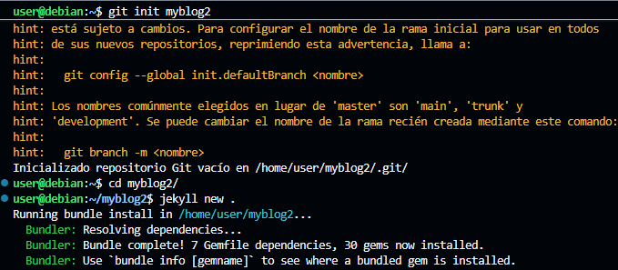

Ejercicio 1 Instalación de Jekyll y subida a GH-Pages
1. Instalación del tema por defecto
Para crear el nuevo blog mediante Jekyll usando Jekyll new . dentro de nuestro repositorio, el tema minima es el predeterminado por lo que no requiere configuración.

2. Configuración del tema
Ahora para modificar la portada tendremos que modificar el archivo _config.yml.

3. Personalización del diseño
Tenemos que modificar los archivos de Index.markdown y about.markdown para darle un diseño a nuestra página web.

Tambien creamos una nueva página .markdown que aparecerá al lado de about y podremos acceder a su contenido.

4. Creación de los Posts
Ahora creamos el contenido de la página que seran los distintos post, estos se crean el la carpeta _posts

5. Resultados
El resultado de esta configuración quedara de una manera similar